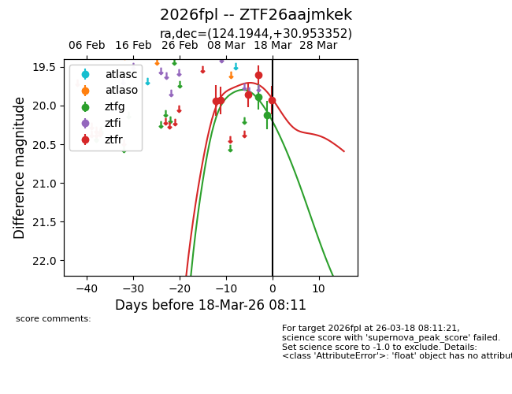
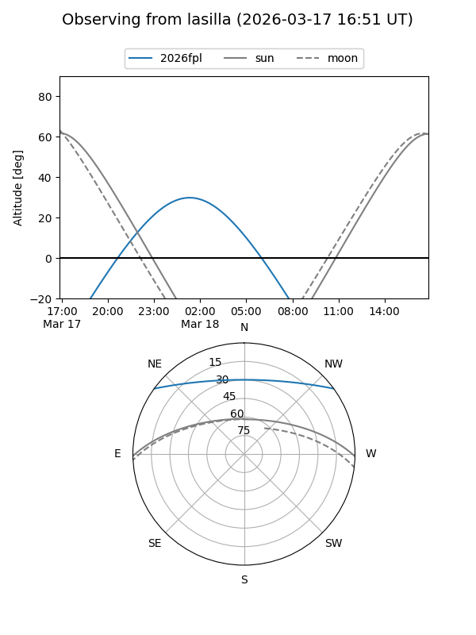
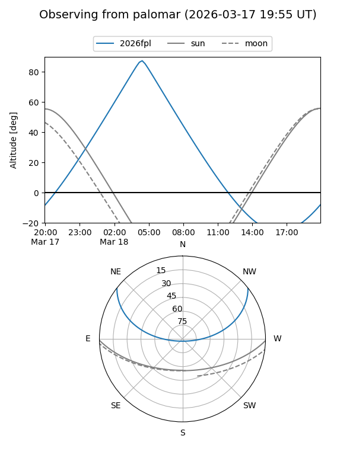
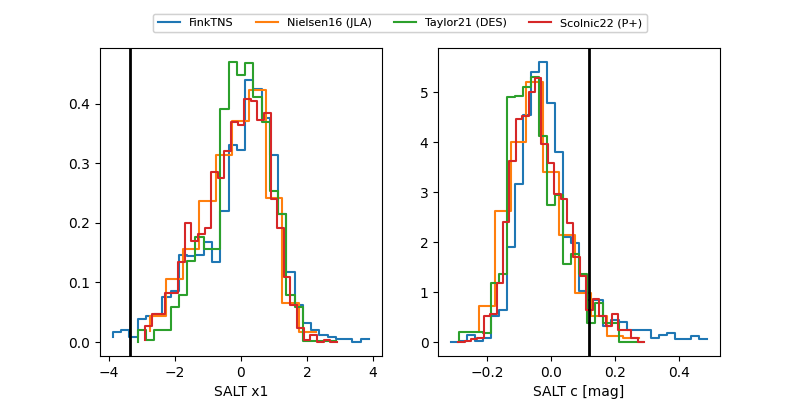

2026fpl
Target 2026fpl at 2026-03-18 08:13
Aliases and brokers:
FINK: link
Lasair: link
ALeRCE: link
TNS: link
YSE: link
alt names
ZTF26aajmkek (ztf,fink_ztf)
2026fpl (tns,yse)
Coordinates:
equatorial (ra, dec) = 124.1944,+30.95335
equatorial (HMS+DMS) = 08:16:46.65,+30:57:12.07
galactic (l, b) = (191.3807,+30.81131)
Flags:
Photometry:
last ztfg=20.12, ztfr=19.93
2 ztfg, 5 ztfr detections
Lightcurve

Visibility


Additional plots
